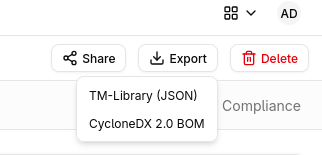
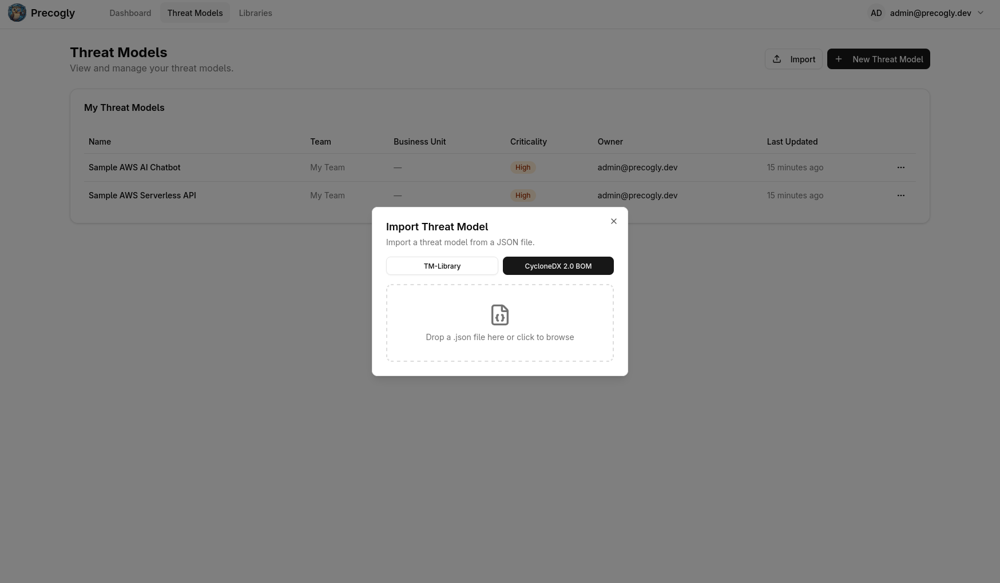

Importing & Exporting¶
Precogly exports threat models as CycloneDX 2.0 Threat Modeling BOM (TM-BOM) JSON and imports them back, enabling cross-instance transfer, version-controlled threat models, and interoperability with other tools. For background on the format and version control workflows, see Threat Model as Code.
One format
The CycloneDX 2.0 TM-BOM is Precogly's only interchange format. The earlier TM-Library format has been removed, in both directions. Files exported by earlier versions of Precogly are not supported either, except in the guest editor; see Files from earlier versions.
The schema¶
Precogly validates against a pinned copy of the CycloneDX 2.0 bundled schema, taken from the 2.0-dev branch of the CycloneDX specification repository at commit f6dcf4d33fecff511c21c4616a5a66d2b8134687 (2026-10-07, the last change to the schema before the 2026-10-11 snapshot). The copy lives at backend/apps/threat_models/tmbom/schema/. It will be re-pinned when CycloneDX 2.0 is final.
Every export passes two checks: zero schema errors, and reference integrity (every bom-ref is unique and every reference points at one). Imports run the same checks and report findings as warnings.
Exporting a threat model¶
Steps¶
- Open the threat model you want to export.
- Click Export TM-BOM in the toolbar.
The browser downloads a file named after your threat model, such as payment-processing-api-cyclonedx-tm-bom.cdx.json.

Serial number and version¶
The document's serialNumber is the model's own serial number, a UUID URN assigned when the model is created and never changed. Its version starts at 1 and goes up only when the exported content differs from the previous export (serial number, version, timestamps, and the version part of BOM-Links to other models are left out of that comparison). Exporting twice without a change gives the same version twice.
Together they form a BOM-Link, urn:cdx:<serial number>/<version>, which other documents use to point at this model. Copy BOM-Link copies it. It is under Advanced on the Details tab of the System dialog on the threat model's Overview tab, where both values are also shown read-only.
What's included¶
The export reads the live model. The tables below say where each Precogly concept lands in the document. References (bom-ref) are derived from the row and are stable across exports: blueprint-<id>, asset-<id>, datastore-<id>, dataset-<id>, zone-<id>, boundary-<id>, flow-<id>, scenario-<id>, control-<id>, risk-<id>, response-<id>, objective-<id>, usecase-<id>; a library threat is threat-<qualified slug>, so it is the same on every installation. A ref that arrived with an import is kept and written back as it came.
Document
| Precogly | TM-BOM |
|---|---|
| Serial number, version | serialNumber, version |
| Primary system (or the model itself when none is set) | metadata.component of type application, with precogly:criticality and precogly:lifecycle-state |
| Lifecycle phase | metadata.lifecycles[] and each blueprint's metadata.lifecycles |
| Reviewer, approver, dates, validity period, review frequency | Each blueprint's metadata (reviewer with role reviewer, approver with role signatory, validityPeriod) |
| Users (reviewer, approver, owners, assignees) | Parties on metadata.component.parties, identified by email |
| Methodologies | threats.methodologies[] (spec values as strings, custom names as objects) |
| Risk scoring method | precogly:risk-scoring-method on the document |
| Threat and countermeasure number counters | precogly:next-threat-number, precogly:next-countermeasure-number on the document |
Blueprint (one blueprints[] entry per blueprint, with name, description, modelTypes)
| Precogly | TM-BOM |
|---|---|
| Scope description, out-of-scope items | scope: excludedComponents when an item's name matches a component, else precogly:out-of-scope |
| Zone | zones[] with type, parent, and precogly:trust-level when set |
| Boundary | boundaries[] with type, zones, crossingRequirements (authentication and authorization lists; data validation, logging, monitoring only when true; rateLimit as text; protocols), sessionManagement |
| Boundary of type trust | Also one threats.trustBoundaries[] entry with trustLevel (only when both zones have a level), threatsAtBoundary, controlsAtBoundary |
| Component (process, actor, system box) | assets[] with type from the component's kind, zone, and precogly:category, precogly:actor-type, precogly:data-sensitivity, precogly:library, precogly:component-type, precogly:provider, precogly:parent |
| Data store component | dataStores[] with type, vendor, zone, dataSets, and precogly:data-store-type when ours is not a spec value |
| Data asset | dataSets[] with a dataProfiles entry carrying the classification, placements, and precogly:confidentiality, precogly:integrity, precogly:availability, precogly:data-sensitivity-tags, precogly:placements |
| Flow | flows[] with type, source, destination, encrypted, protocols, authentication, authorization, dataProfiles, and precogly:port, precogly:has-sensitive-data, precogly:data-classification, precogly:flow-data |
| DFD | visualizations[] of type data-flow or context, the canvas as a base64 attachment with media type application/vnd.precogly.dfd+json, precogly:diagram-type, precogly:primary |
| Assumption | assumptions[] with topic, validity, impact, owner, relatedAssets, validationMethod, validationDate |
| Related threat model | A system asset with a threat-model external reference holding the other model's BOM-Link and precogly:relationship; "depends on" and "is a subsystem of" also as relationships[] (dependsOn, contains) |
| Threat actor (a persona in the spec), or a threat's free-text actor | actors[] with an inline party (role attacker, an archetype) and the precogly:persona-* properties, or precogly:actor-text |
Threats
| Precogly | TM-BOM |
|---|---|
| Library threat, or a custom threat's definition | threats.threats[] with categories for STRIDE, LINDDUN, MAESTRO, and MITRE ATT&CK tactics, precogly:taxonomy for every other taxonomy (CAPEC, CWE, OWASP Top 10, ...), origin when every scenario agrees, mitigations and relatedBusinessObjectives as the union over its scenarios |
| Threat (one scenario, however many targets) | threats.scenarios[] with name, threats, affectedAssets (the targets; the system component for a whole-system threat), actor, intent, accessLevel |
| Rating | riskScore (level, score, methodology), likelihood and impact with their factors, categories, and quantification |
| Impact description | impact.description when the scenario has an impact level, else precogly:impact-description |
| Number, status, triage, rationale, generated flag, sources, extra taxonomy entries, objectives | Scenario properties, listed below |
Controls (one controls[] entry per countermeasure)
| Precogly | TM-BOM |
|---|---|
| Control functions and nature | category holds the first function that is a spec value; the full list in precogly:control-functions; precogly:control-nature |
| Status | status as the spec value; gap, waived, and platform as custom status objects |
| Applies to | appliesTo (left out when the control applies to the whole system) |
| Implemented by | implementedBy: component refs plus a party with the provider role for the text |
| Owner, effectiveness, ticket, evidence | owner, effectiveness.percentage, external references of type issue-tracker and evidence. An imported owner who is not a member, and an imported effectiveness rating, are written back (see Passthrough) |
| Compliance mappings | satisfies pointing into definitions.standards[].requirements[] (one standard per framework; a standard built from the mapping's snapshot when the framework is not installed), with precogly:sufficiency. Standards from an imported file are written back as they came, with their refs; a mapping to one of their requirements (same standard name and identifier) points at it, and a new requirement of such a standard is added to it. Imported refs to anything else, such as an engineering requirement, are written back as they came |
| Linked threats | precogly:mitigates (the scenarios) and the abstract threat's mitigations |
Risks
| Precogly | TM-BOM |
|---|---|
| Risk | risks.risks[] with statement (built from the description or name when the risk has none, marked precogly:statement-generated), status, domains (with an imported domain's priority and description, and imported custom domains), relatedThreats (scenario refs), relatedBusinessObjectives, owner, precogly:assigned-to |
| Inherent, residual, target rating | inherentRisk, residualRisk, targetRisk |
| Response | responses[] with strategy, description, status, effectiveness, cost, priority, owner, targetDate, controls. An imported status that Precogly stores as planned (recommended, proposed, approved, rejected, decommissioned, or a custom one) is written back while the response is still planned. On import, a response's targetDate becomes the due date of each control it names that has no precogly:due-date of its own; with several responses the earliest date wins. This is the spec's own place for a planned control's date in 2.0, such as a POA&M milestone, so overdue controls show from a file with no Precogly properties |
Definitions
| Precogly | TM-BOM |
|---|---|
| Business objective | definitions.businessObjectives[] |
| Compliance framework and requirement | definitions.standards[] and their requirements[] |
| Use case | definitions.useCases[] with businessObjectives, and precogly:abuse-cases (refs of the abuse cases that misuse it). Its components and flows are written as each blueprint's useCases[] entries (assets, flows, data store refs included) and as useCases on each process or actor asset, never on a dataStores entry |
| Abuse case | threats.abuseCases[] with name, description, abuser (the persona's actor), preconditions, mainFlow, detectionOpportunities, targets (components and flows), realizes (the abstract threats of its threats), and kept mitigations. The abstract threat's abuseCases lists the abuse cases that realize it. The spec gives an abuse case no properties |
Precogly properties¶
Everything Precogly stores that has no field in the schema is written as a precogly: property on the object it belongs to. This is the full registry; it is generated from backend/apps/threat_models/tmbom/properties.py, and the guest editor uses the same list. A property not in this table is passthrough. Value types: string, integer, boolean (true or false), date, or json (a JSON document in the string value).
| Property | On | Type | Meaning |
|---|---|---|---|
precogly:out-of-scope |
scope | json | An out-of-scope item whose name matches no component: {name, reason}. |
precogly:diagram-type |
visualization | string | The DFD level (context, level1, level2) of a Precogly canvas visualization. |
precogly:primary |
visualization | boolean | True on the blueprint's primary DFD, the one that syncs to rows. |
precogly:category |
asset | string | Precogly's DFD role of a component: process, datastore, external_human_actor or external_system_actor. |
precogly:actor-type |
asset | string | The actor or system type chosen on an external actor component. |
precogly:data-sensitivity |
asset | string | The data sensitivity level chosen on a process or data store. |
precogly:data-store-type |
data-store | string | Precogly's own data store type value when it is not a spec value. |
precogly:next-threat-number |
document | integer | The model's next threat number, so a reopened file never reuses one. |
precogly:number |
scenario | integer | The scenario's threat number (T7 is 7). |
precogly:threat-status |
scenario | string | Derived status: exposed, addressable or mitigated. |
precogly:triage-status |
scenario | string | Triage decision: open, accept, mitigate, delegate or eliminate. |
precogly:decision-rationale |
scenario | string | Rationale recorded with the triage decision. |
precogly:auto-generated |
scenario | boolean | True while the scenario is an untouched product of library generation. |
precogly:impact-description |
scenario | string | What the attacker achieves, when the scenario has no impact level to carry it as impact.description. |
precogly:instance-categories |
scenario | json | Taxonomy entries added on a library threat's scenario itself, which its shared threat definition cannot carry: [{taxonomy_slug, external_id, title}]. A custom threat's own categories are on its definition. |
precogly:threat-sources |
scenario | json | Slugs of the NIST SP 800-30 threat sources the scenario cites. |
precogly:split-from |
scenario | string | The ref of the imported scenario this one was split from. |
precogly:taxonomy |
threat | json | A taxonomy entry outside the four spec taxonomies: {taxonomy_slug, external_id, title}. |
precogly:actor-text |
actor | string | The free-text actor of a scenario, declared once as an actor entry. |
precogly:persona-name |
persona-party | string | The persona's display name (the spec party has none). |
precogly:persona-symbolic-name |
persona-party | string | The persona's symbolic name; the match key on import. |
precogly:persona-is-person |
persona-party | boolean | Whether the persona is a person rather than a system or group. |
precogly:persona-malicious-intent |
persona-party | boolean | Whether the persona acts with malicious intent. |
precogly:persona-skill-level |
persona-party | string | The persona's skill level. |
precogly:persona-motivation |
persona-party | string | The persona's motivation, as text. |
precogly:persona-resources |
persona-party | string | The persona's resources, as text. |
precogly:persona-objectives |
persona-party | string | The persona's objectives, as text. |
precogly:next-countermeasure-number |
document | integer | The model's next countermeasure number. |
precogly:number |
control | integer | The control's number (C3 is 3). |
precogly:control-functions |
control | json | Every control function; the spec's single category holds the first spec value. |
precogly:control-nature |
control | string | technical, administrative or physical. |
precogly:priority |
control | string | The control's priority. |
precogly:due-date |
control | date | Target completion date (a POA&M scheduled completion date). Wins over a response's targetDate on import. |
precogly:required-for-release |
control | boolean | True when the control blocks a release. |
precogly:auto-generated |
control | boolean | True while the control is an untouched product of library generation. |
precogly:source |
control | string | Where the control came from, as text. |
precogly:verified-by |
control | string | Email of the user who verified the control. |
precogly:waiver-reason |
control | string | Why a waived control is waived. |
precogly:library |
control | string | Qualified slug of the library countermeasure the control was made from. |
precogly:mitigates |
control | json | Refs of the scenarios the control is explicitly linked to. |
precogly:sufficiency |
control | json | [{requirement, sufficiency}] for each requirement in satisfies. |
precogly:trust-level |
zone | integer | The zone's trust level, 0 to 100; absent when not set. |
precogly:port |
flow | integer | The flow's port. |
precogly:has-sensitive-data |
flow | boolean | True when the flow carries sensitive data. |
precogly:data-classification |
flow | json | The flow's data classification tags. |
precogly:business-objectives |
scenario | json | Refs of the business objectives this scenario puts at risk; the abstract threat carries the union. |
precogly:criticality |
system | string | The model's criticality as a spec criticality value (low, moderate, high, critical). |
precogly:lifecycle-state |
system | string | The inventory system's lifecycle state. |
precogly:lifecycle-state |
asset | string | The lifecycle state of the inventory system a system asset stands for. |
precogly:relationship |
asset | string | On a system asset that stands for another threat model: depends_on, subsystem_of, related_to or superseded_by. |
precogly:statement-generated |
risk | boolean | True when the statement was synthesized from the description or name because the risk had none (the spec requires one). |
precogly:risk-scoring-method |
document | string | The model's scoring method: qualitative-matrix, owasp-risk-rating, fair or mozilla-rra. Each rating also names its own methodology. |
precogly:library |
asset | string | Qualified slug of the component library row the component was made from. Also read on data stores. |
precogly:component-type |
asset | string | The component type copied from the library. Also read on data stores. |
precogly:provider |
asset | string | The provider copied from the library; a data store writes it as vendor instead. |
precogly:parent |
asset | string | Ref of the component this one sits inside (a system asset or a process). Also read on data stores. |
precogly:confidentiality |
data-set | string | The data set's confidentiality need: low, medium or high. |
precogly:integrity |
data-set | string | The data set's integrity need: low, medium or high. |
precogly:availability |
data-set | string | The data set's availability need: low, medium or high. |
precogly:data-sensitivity-tags |
data-set | json | The data set's sensitivity tags (pii, phi, pci and so on). |
precogly:placements |
data-set | json | Per placement, what the spec placement cannot hold: [{dataStore, dataState, volume}]. |
precogly:flow-data |
flow | json | Per data set the flow carries, how it is protected: [{dataSet, protectionMethod, encryptionType, format, sensitivityOverride}]. |
precogly:assigned-to |
risk | string | Party ref of the person the risk is assigned to; the owner is the spec field. |
precogly:abuse-cases |
use-case | json | Refs of the abuse cases that misuse this use case; the spec has no field for that link. |
precogly:abuse-cases |
scenario | json | Refs of the abuse cases this scenario comes from. The abuse case's realizes names the abstract threat only, which several scenarios share. |
Tip
Other tools can ignore every precogly: property; the standard fields carry the model. When the file comes back to Precogly, the properties restore the numbers, triage decisions, scope, and the rest.
Use cases and abuse cases¶
Use cases and abuse cases are stored as rows and are editable in the app. See Use Cases and Abuse Cases.
On import:
- A use case's
businessObjectives, each blueprint'suseCases[](assets,flows) and each process or actor asset'suseCasesbecome the use case's links to business objectives, components, and flows. - Each entry of
threats.abuseCases[]becomes an abuse case. Itsabuserbecomes the persona the actor turned into, or is kept as a ref. Itstargetsbecome links to components and flows. Its use cases come fromprecogly:abuse-caseson each use case. realizesnames an abstract threat, and one abstract threat can have several scenarios. Precogly links the scenarios in this order: first the scenarios whoseprecogly:abuse-casesproperty names the abuse case, then the scenarios of that threat whose targets overlap the abuse case's targets. If neither finds a scenario, nothing is linked. The abuse case keeps therealizesref and shows "Realizes library threat X, not linked to a threat in this model".threat.abuseCaseson an abstract threat is read the same way.- A step with no description, or an alternative flow or exception with no name or condition, is dropped with a warning. Exception handling must be one string. Repeated entries are dropped, and steps are numbered again from 1. Other keys, such as a step's
actor, are kept. - Requirements, step actors, and refs that resolve to nothing are kept and written back.
On export:
- Kept refs that no longer resolve are left out with a warning naming the use case or abuse case: an
abuser, atargets,realizesormitigationsentry, a stepactor, or a use case'sbusinessObjectivesentry. For exampleAbuse case 'Card testing': dropped abuser 'actor-9'; it no longer resolves.andAbuse case 'Card testing': left out realizes 'Payment fraud'; no threat of it is left in the model. - Abuse cases and blueprint use case entries kept from an earlier import are merged with what the export writes. They are not replaced.
- Lists are written without repeats, as the schema requires.
What's not exported¶
- The owning team and organization: an import assigns the importing user's team.
- Connected library packs: an installation detail. Components keep their library link as
precogly:library, so a re-import re-links them when the pack is installed. - Whether a flow crosses a boundary: derived from the boundaries, and derived again on import.
- Verification tests, pentest findings, countermeasure comments and history, reference images: evidence tied to the originating installation.
Owners and assignees are exported as parties with their email. On import they are matched to members of the organization by email. The owner of a control, risk, or response who is not a member (a person from elsewhere, an organization, a persona) is kept for export and not assigned. Setting or clearing that owner in Precogly replaces the kept one.
Importing a threat model¶
Steps¶
- From the Threat Models list page, click Import.
- Drag a
.cdx.jsonfile onto the dropzone, or click to open the file picker. - Precogly validates the file and creates a new threat model.

After the import, a summary shows the counts of what was created (blueprints, zones, boundaries, components, flows, data assets, threats, controls, risks and responses, assumptions, business objectives, personas, use cases, related models, diagrams, and diagrams generated) and every warning. Where the file can be fixed, a warning says how: a missing required field names what to add, a requirement from a standard placed under definitions.requirements points to definitions.standards[].requirements, a satisfies entry that is not a reference asks for a bom-ref, a bad date shows the expected format, and an unknown status lists the ones Precogly reads. One warning also lists the custom properties Precogly does not read, so a value your tool relies on does not disappear without notice. Most are written back on export, but not those on objects Precogly rebuilds from its own fields, such as threat actors and visualizations.
Warning
The import always creates a new threat model with its own serial number. It never merges into or updates an existing one. Importing the same file twice gives two models.
What import never does¶
- Reject a TM-BOM. The only files refused are ones that are not a TM-BOM at all: not a JSON object, no
specFormat: "CycloneDX", or aspecVersionthat does not start with2.. Everything else is imported; schema findings become warnings, and whatever cannot be stored is kept as received so the export writes it back. - Count as approval. A review or approval block in the file is kept and shown on the Review card as "approved in the source document". The imported model starts unapproved.
- Keep the file's serial number. The imported model gets a fresh serial number and starts at version 1. The original serial number and version are kept in the model, and BOM-Links from other files resolve through them. If two models in your organization carry the same original serial number, a BOM-Link to it resolves to neither, and the import warns naming both.
- Grant platform status. A control with platform status is kept as platform only when the importing user is on the Security Team; otherwise it is stored as a gap with a warning.
- Touch the system inventory on its own.
metadata.componentlinks an inventory system of the same name when one exists. A new inventory entry is created only when the component carriesprecogly:lifecycle-state, the sign that the exporting model had a primary system.
The importing user's team owns the new model. When the user belongs to several teams, the model has no owning team until one is set.
Diagrams¶
A Precogly canvas in the file (a visualization with the media type application/vnd.precogly.dfd+json) is restored as a DFD, with its node and edge ids mapped to the imported rows. A blueprint with no such canvas gets one generated from its rows: zones sized by their contents and nested by parent, components in a grid inside their zone, flows and boundaries as edges. Saving the generated diagram unchanged changes nothing in the model. When a canvas and the blueprint disagree on a label, the blueprint wins and the import warns per rename.
Numbers¶
Threat and countermeasure numbers are read from precogly:number. A number that is already taken or invalid gets a fresh one with a warning. A document with no numbers gets fresh ones in document order. The counters are set past the larger of precogly:next-*-number and the highest number seen, so a reopened file never hands out a number again.
Import warnings and what they mean¶
Every warning names the object it is about. The main kinds:
| Warning says | What happened | What to do |
|---|---|---|
Schema: ... |
The file does not match the pinned schema at that path | Nothing is lost; check the named path if the file came from your own tooling |
References: ... |
A bom-ref is duplicated or a reference points at nothing |
The dangling link was skipped; fix the source file if the link mattered |
... is a custom type; stored as '...' and kept for export |
A zone, boundary, flow, asset, or assumption carries a type that is not a spec value | Shown with the default type; the original is written back unless you pick another type |
... status '...' is not one Precogly has; stored as ... and kept for export |
A control or risk status outside Precogly's lifecycle | Review the control or risk before relying on reports |
... cannot be a target in Precogly and were kept for export |
A scenario or control points at something Precogly cannot target, such as a data set or an actor kept as passthrough | The remaining targets were linked; the extra refs are written back |
Scenario '...' names only elements Precogly cannot show; stored as a whole-system threat |
None of the scenario's targets could be linked | Edit its targets in threat analysis |
Scenario '...' realizes N threats and was split ... |
One scenario named several abstract threats | It became one threat per abstract threat; only the first keeps the original ref and number |
... number N is taken or invalid; a new one was allocated |
Two scenarios or controls carried the same number | Nothing to do |
Control '...': platform status needs the Security Team role; stored as gap |
See above | Ask a Security Team member to set the status |
Boundary '...' joins N zones; Precogly keeps the first two ... |
The spec allows a boundary across more than two zones | The full list is written back |
Flow '...' was skipped: its source or destination is not a component of this blueprint |
An end of the flow was not an asset Precogly could create | Add the flow by hand if needed |
... component library '...' is not installed |
The file names a library entry from a pack you do not have | The component keeps its copied fields; install the pack and change the technology to re-link |
... satisfies reference '...' is no standard requirement here; kept for export, not linked |
A control satisfies something that is not a requirement of a standard in the file, such as an engineering requirement | Written back while it resolves; add a compliance mapping by hand if it should be one |
...: owner matches no member of the organization; kept for export, not assigned |
The owner of a control, risk, or response is not a member | Written back until you set an owner |
Risk '...': domain '...' is a custom domain; kept for export, not shown |
A risk domain outside the spec list | Written back unchanged |
Risk '...': the name is taken; stored as '... (2)' |
Risk names are unique in Precogly | The original name is written back on export unless you rename it |
Risk '...': response strategy '...' has no row in Precogly; kept for export |
An exploit or enhance response |
Kept on the risk and written back |
Risk '...' has no inherent rating; rated medium |
The spec does not require a rating; Precogly does | Rate the risk |
The document carries a review or approval; it is shown as approved in the source document ... |
See above | Review and approve here when ready |
A diagram was generated ..., Canvas node '...' renamed ... |
See Diagrams | Nothing to do |
N visualization(s) are not Precogly canvases; kept for export, not shown |
Diagrams from another tool | Written back unchanged |
The '...' section is not imported by this version; it was left out |
A section Precogly does not read | Kept as passthrough |
Review the warnings before using an imported model as audit evidence. Warnings are also logged on the server.
Passthrough: what is kept and written back¶
Precogly keeps everything it does not model and writes it back on export:
- Unknown top-level sections and unknown keys of known sections, on the model.
- Attack trees, attack paths, attack patterns, indicators, threat profiles, risk appetites, assessments, data profiles, and sequence diagrams, on the model or the blueprint they belong to.
- Engineering requirements in
definitions.requirements(a project's own needs, such as "Lock the account after 5 failed logins"), and therequirementslinks to them from use cases and blueprints. Precogly does not show or edit them. Compliance requirements are different: they come from the frameworks in your library packs and travel indefinitions.standards. - Unknown fields of a known object, and every property that is not a
precogly:property, on that object's row. - Values Precogly could not store (a custom type object, a custom status, a mixed authentication list, an
exploitresponse, the zones of a boundary beyond the first two), on the nearest row that was stored. A refused field value is written back as long as the field still holds the default it was imported with. - Values Precogly holds only in part, written back while the row still holds what it was imported as:
- an owner who is not a member, while no owner is set;
- an effectiveness
rating, while the percentage is unchanged; - a response status stored as planned (such as
proposed), while the response is planned; - a risk domain's
priorityanddescription, while the risk has that domain; custom domains always; satisfiesrefs that are not standard requirements, while they resolve.
The stale-ref rule. Kept content can point at things you later delete. On export, every such reference is checked: a reference that no longer resolves is removed from a list or dropped from an optional field; if removing it would leave a required field empty, the object that holds it is left out. Each removal is an export warning naming the object. The stored content is never changed, so nothing is lost if the rule changes later. The exported document always passes the reference check.
Use case steps, and abuse case and blueprint use case entries that could not be stored as rows, are kept as JSON and follow the same rule.
What Precogly does not model¶
These parts of the schema are not shown, linked, or edited. All of them are kept and written back. Each is a choice, not an oversight; they are listed here so you know what an imported file can and cannot do in Precogly.
- Engineering requirements.
definitions.requirementsis kept as received. A control can point at one throughsatisfies, and the ref is written back, but Precogly shows no link. A risk cannot be linked to a requirement in Precogly. - Other risk links.
affects,relatedRequirements,relatedStandards,relatedVulnerabilities,relatedWeaknesses, andrelatedClaimsare kept on the risk. Precogly has no vulnerabilities, weaknesses, or claims to link to. ArelatedThreatsref to an abstract threat (rather than a scenario) is kept, not linked. exploitandenhanceresponses. These are for positive risks (opportunities). They are kept on the risk.- Assessments and risk appetites. Kept on the model.
- Required fields that differ. Precogly requires an inherent rating, so a risk without one is rated medium with a warning. The schema requires a statement, so a risk without one exports a statement built from its description or name, marked
precogly:statement-generatedand dropped again on import. Risk names are unique in a model; a repeated name gets a suffix, and the original is written back. - Control statuses.
gap,waived, andplatformare Precogly's and export as custom statuses, which the schema allows. Decision statuses (recommended,proposed,approved) show as planned andrejectedas waived; the original is written back while the status is unchanged. - Owners. An owner in Precogly is a member of the organization. The schema allows any party; other owners are kept, not shown.
- Compliance requirements. A requirement from a library pack has a section code, a name, and a description. An imported file's
definitions.standardsis kept whole and written back, including requirements no control satisfies and fields such asopenCreand multi-languagedescriptions; Precogly shows only the requirements its controls map to.
Files from earlier versions¶
Files exported or saved by earlier versions of Precogly (before the TM-BOM alignment) used an older shape that does not match the schema. The workspace does not support them: there is no converter in the backend. Such a file goes through the normal import, most of its content lands in the warnings, and the result is not the model you had. To open one as it was, run the previous version of Precogly in Docker. TM-Library files cannot be imported at all.
The guest editor converts files saved by its own earlier version when it opens them, since a guest's file is their only copy. The diagram, threats, countermeasures and system details come across, and a notice asks you to save the file, which writes the current format. Saved again, such a file also imports into the workspace.
Guest editor¶
The guest editor reads and writes the same TM-BOM shape. A file saved by the guest editor imports into the signed-in workspace with no warnings, and a signed-in export opens in the guest editor with the same threats, targets, and numbers. The guest editor edits the first blueprint and keeps the rest of the file as passthrough.
Interoperability with other tools¶
A Precogly export is a plain CycloneDX 2.0 TM-BOM. Another tool reads the standard fields (blueprints, zones, boundaries, flows, assets, threats, scenarios, controls, risks, definitions) and can ignore the precogly: properties.
A file from another tool imports with warnings for what Precogly has no place for. Actors used as the ends of flows become external actor components; an actor marked as an attacker becomes a persona; a scenario with several targets becomes one threat with several targets; a scenario naming several threats is split; per-scenario control links come from precogly:mitigates when present and from the abstract threat's mitigations otherwise.
Components created from another tool's file are not linked to library packs unless the file names a library the installation has. If you later install a pack that covers the same components, change the technology on each component to link it; its threats and numbers are kept.
Sample files¶
backend/apps/threat_models/tests/fixtures/tmbom/reference-model.cdx.json is the reference document: a complete, valid export that touches every section above, and the file the backend and guest editor tests agree on. The AI Threat Model Generation guide has a smaller hand-written example; both are validated against the pinned schema in the test suite.
What's next?¶
- Threat Model as Code: version control workflows and format overview
- Library Packs: importing packs to enrich threat models with pre-mapped threats and compliance
- Creating a Threat Model: step-by-step guide to building from scratch or with library packs
- Compliance Mapping: mapping countermeasures to framework requirements
- CycloneDX specification: learn more about the CycloneDX BOM standard and ecosystem